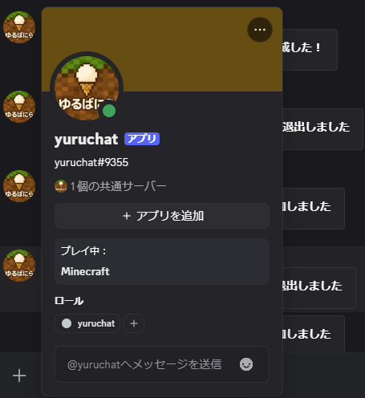

ディスコードのゲームチャットで発言するには？
条件として、ゆるばにらマインクラフトサーバーに参加している方のみ、発言可能です。 やり方は、マインクラフトに参加して、/discord linkとチャット欄に入力して、表示された 4桁のリンクコードを、ディスコードのゲームチャットにいる@yuruchatへDMで送信してください。 すると発言できるようになります。もしも、問題があったらディスコードの質問等のフォーラムへお願いします。

戻る